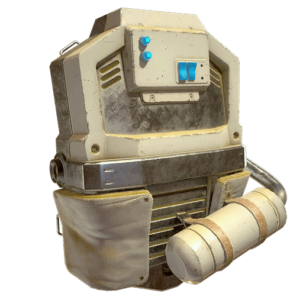
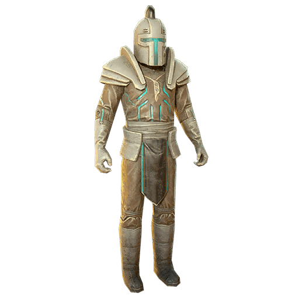
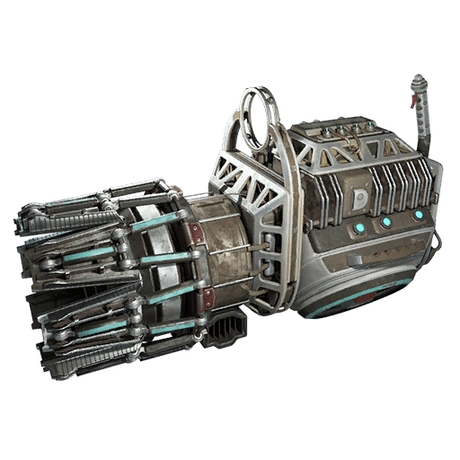
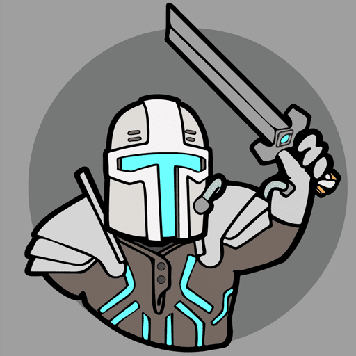

アリステア
DATE: 2026/2/6
アリステアは、戦前のフランチャイズ作品である『K.D.インクウェル：アトミック・クロニクル』に登場する架空のキャラクターです。
背景
『驚くほど素晴らしい話』のキャラクターであるアリステアは、5世紀の「伝説のアヴァロンの騎士」です。
骨董品ギルドは、アリステアがタイムトラベルをする歴史家 K.D.インクウェルの助けになるかもしれないと考えています。
彼女は、歴史上「アヴァロンの書記官」として知られる、神出鬼没のシノックを探し求めています。
注目の戦利品
アリステアの剣
剣のスキン、あるいは独自の近接武器スキンとして登場します
アリステアのアーマー
コスチューム/アウトフィットのセットです
アリステアのヘルメット
ヘッドウェアのアイテムです
勇敢なアリステアのスーツ
バリエーション版のアウトフィットです
アリステアのバックパック

バックパックの外装スキンです
アリステアのバックパック・フレア

バックパック用の装飾アイテムです
ガトリング・プラズマのアリステア塗装

武器用のスキン塗装です
アリステアの意気揚々としたエモート

プレイヤーが使用できるエモートです
登場作品
アリステア は Fallout 76 において名前のみ言及される形で登場し、アップデート「Steel Dawn」で導入されました。
彼は主にシーズン報酬（スコアボード）のテーマキャラクターとしてその存在が描かれています。
感想
イン・ユニバースの設定: アリステアは実在の人物ではなく、戦前の人気コミックやラジオドラマの世界におけるヒーローです。
Fallout 76 のシーズン5「42世紀からの脱出」では、彼と K.D.インクウェルが中心的な役割を担っています。
アヴァロンとの繋がり: 5世紀の騎士という設定ながら、タイムトラベルを駆使する K.D.インクウェルと共に未来や過去を駆け巡る「レトロフューチャーなファンタジー」の象徴的なキャラクターと言えます。
報酬としての価値: 彼の装備一式（アーマーや剣）は、プレイヤーがその英雄的な外見を再現するための「戦利品」やエモートが非常に人気が高いアイテム群です。
This article uses material from the “Endor” article on the Fallout wiki at Fandom and is licensed under the Creative Commons Attribution-Share Alike License.
イン・ユニバースの設定: アリステアは実在の人物ではなく、戦前の人気コミックやラジオドラマの世界におけるヒーローです。
Fallout 76 のシーズン5「42世紀からの脱出」では、彼と K.D.インクウェルが中心的な役割を担っています。
アヴァロンとの繋がり: 5世紀の騎士という設定ながら、タイムトラベルを駆使する K.D.インクウェルと共に未来や過去を駆け巡る「レトロフューチャーなファンタジー」の象徴的なキャラクターと言えます。
報酬としての価値: 彼の装備一式（アーマーや剣）は、プレイヤーがその英雄的な外見を再現するための「戦利品」やエモートが非常に人気が高いアイテム群です。
This article uses material from the “Endor” article on the Fallout wiki at Fandom and is licensed under the Creative Commons Attribution-Share Alike License.
TAGS: #Fallout76#Creature